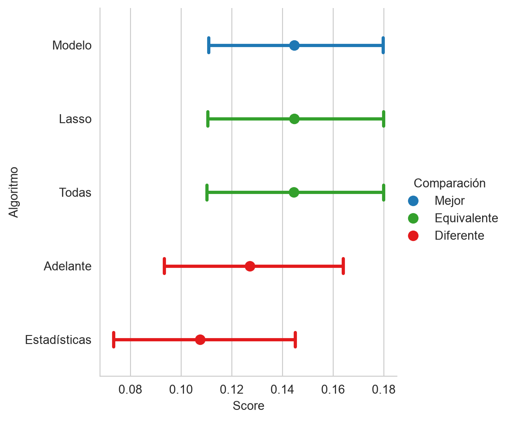

from sklearn.linear_model import LinearRegression, Lasso, LassoCV
from sklearn.model_selection import train_test_split, KFold
from sklearn.preprocessing import StandardScaler
from sklearn.feature_selection import f_regression, SelectKBest,\
SequentialFeatureSelector,\
SelectFromModel
from sklearn.metrics import r2_score as r2
from CompStats.metrics import r2_score
import numpy as np
import pandas as pd
from matplotlib import pylab as plt
import matplotlib as mpl
import seaborn as sns
URL_DATOS = ('https://github.com/INGEOTEC/AprendizajeComputacional/'
'releases/download/datos-v1')
PALETTE = mpl.cm.Paired4 Selección de Variables
El objetivo de la unidad es aplicar procedimientos de selección de variables en un problema de regresión, a saber, filtros basados en estadísticas, selección hacia adelante y hacia atrás, y selección mediante un modelo, y comparar las variables que elige cada uno con las que elige Lasso.
Paquetes usados
4.1 Introducción
Lasso (Sección 3.6) selecciona variables al mismo tiempo que ajusta el modelo, y el modelo reducido (Sección 3.3.2) quitó las variables cuyo estadístico \(t\) era pequeño. Este capítulo presenta los procedimientos clásicos de selección, que son los filtros basados en estadísticas, la búsqueda hacia adelante y hacia atrás, y la selección mediante un modelo, y los compara con lo que eligió Lasso.
Todos parten de la idea de que existen variables que no contribuyen a la solución o cuyo aporte ya está dado por otras, y una introducción general a estos procedimientos es Guyon y Elisseeff (2003). Esto trae como consecuencia, en el mejor de los casos, un mayor costo computacional o de recolección y, en uno menos afortunado, un modelo con un rendimiento menor al que se hubiera obtenido seleccionando las variables.
Los datos son los de Abandono Escolar y la preparación es la misma que en la Sección 3.2, por lo que no se vuelve a explicar. El siguiente código lee los datos, codifica las variables categóricas, separa los conjuntos de entrenamiento y prueba con el mismo random_state y estandariza con \(\mathcal T\).
educacion = pd.read_csv(f'{URL_DATOS}/sep_f911_educacion.csv.gz')
constantes = [c for c in educacion.columns if educacion[c].nunique() == 1]
X = educacion.drop(columns=['tasa_abandono', 'clave_cct'] + constantes)
y = educacion['tasa_abandono'].to_numpy()
X = pd.get_dummies(X, drop_first=True, dtype=float)
columnas = X.columns
T, G, y_t, y_g = train_test_split(X.to_numpy(), y, test_size=0.2,
random_state=0)
escala = StandardScaler().fit(T)
T = escala.transform(T)
G = escala.transform(G)Para comparar con Lasso se recalcula el \(\lambda\) que selecciona la validación cruzada (Sección 3.7).
kfold = KFold(n_splits=5, shuffle=True, random_state=0)
lambdas = np.logspace(-3, 1, 30)
lasso_cv = LassoCV(cv=kfold, alphas=lambdas, max_iter=5000).fit(T, y_t)
lambda_opt = lasso_cv.alpha_El \(\lambda\) seleccionado es \(0.0092\) y Lasso conserva el subconjunto de variables con coeficiente distinto de cero de entre las \(56\) variables.
4.2 Basada en Estadísticas
Una manera de seleccionar es descartar las variables que no tienen relación con la respuesta. En regresión, la prueba es la estadística \(F\) de la regresión lineal simple de \(y\) sobre cada variable, cuya hipótesis nula es que el coeficiente es cero. Está implementada en la función f_regression. (En clasificación la prueba equivalente es Kruskal-Wallis, o ANOVA si se supone normalidad.) Con esas estadísticas se pueden ordenar las variables y seleccionar las \(k\) mejores con SelectKBest.
f_est, p_valores = f_regression(T, y_t)
sel = SelectKBest(score_func=f_regression, k=10).fit(T, y_t)
seleccionadas = columnas[sel.get_support()]Las diez variables con mayor estadística \(F\) son alumnos, grupos, docentes, pct_primer_grado, aulas_en_uso, entidad_Oaxaca, tipo_sostenimiento_particular, tipo_servicio_general, tipo_servicio_telesecundaria, organizacion_docentes_multigrado. De ellas, \(8\) están entre las que conserva Lasso con el \(\lambda\) elegido por validación cruzada.
4.2.1 Ventajas y Limitaciones
Las técnicas basadas en estadísticas requieren de pocos recursos computacionales y están basadas en pruebas que permiten saber cuáles son las razones de su funcionamiento. Estas fortalezas también son origen de sus debilidades, pues observan las variables de manera aislada y no consideran que pueden interactuar. Por otro lado, la selección es agnóstica del algoritmo de aprendizaje utilizado.
4.3 Selección hacia Adelante y hacia Atrás
Un procedimiento que pone en el centro del proceso de selección al algoritmo de aprendizaje utilizado es Selección hacia Adelante y su complemento, Selección hacia Atrás. El algoritmo de selección hacia adelante es un procedimiento iterativo que selecciona una variable a la vez guiada por el rendimiento de esa variable cuando es usada en el algoritmo de aprendizaje. Al igual que los procedimientos anteriores, no modifica las características del problema, solamente selecciona las que se consideran relevantes.
En selección hacia adelante y hacia atrás se inicia con el conjunto de entrenamiento \(\mathcal T = \{(x_i, y_i)\},\) con una función \(L\) que mide el rendimiento del algoritmo de aprendizaje \(\mathcal H.\) La idea es ir seleccionando de manera iterativa aquellas variables que generan un modelo con mejores capacidades de generalización. Para medir la generalización se puede dividir \(\mathcal T\) en dos conjuntos, entrenamiento y validación, o utilizar \(k\) iteraciones de validación cruzada.
Suponga un conjunto \(\pi \subseteq \{1, 2, \ldots, d\}\) de tal manera que \(\mathcal T_\pi\) solamente cuenta con las variables identificadas en el conjunto \(\pi\). Utilizando esta notación el algoritmo se puede definir de la siguiente manera. Inicialmente \(\pi^0 = \emptyset\), en el siguiente paso \(\pi^{j + 1} \leftarrow \pi^j \cup \textsf{arg max}_{\{i \mid i \in \{1, 2, \ldots, d\}, i \notin \pi^j\}} \mathcal P(\mathcal H, \mathcal T_{\pi \cup i}, L)\), donde \(\mathcal P\) representa el rendimiento del algoritmo \(\mathcal H\) en el subconjunto \({\pi \cup i}\) usando la función de rendimiento \(L\). Este proceso continúa si \(\mathcal P^{j+1} > \mathcal P^j\) donde \(\mathcal P^0 = 0\).
Es importante mencionar que el algoritmo antes descrito es un algoritmo voraz y que el encontrar el óptimo de este problema de optimización no se garantiza con este tipo de algoritmos. Lo que quiere decir es que el algoritmo encontrará un óptimo local.
Ilustrando la primera iteración en el problema de abandono escolar, \(\mathcal H\) es la regresión lineal y \(L\) es \(R^2\) medido con validación cruzada. Como inicialmente \(\pi^0 = \emptyset\), solo es necesario ajustar un modelo con cada una de las variables por separado. El siguiente código itera por todas las variables, selecciona en T1 los datos con esa única variable, hace \(k\) iteraciones de validación cruzada y guarda el rendimiento en perf.
perf = []
for var in range(T.shape[1]):
T1 = T[:, [var]]
hy_v = np.zeros_like(y_t)
for tr, vs in kfold.split(T1):
hy_v[vs] = LinearRegression().fit(T1[tr], y_t[tr]).predict(T1[vs])
perf.append(r2(y_t, hy_v))La Figura 4.1 muestra el \(R^2\) de cada variable en la primera iteración. La mejor variable es organizacion_docentes_multigrado con un \(R^2\) de \(0.0289\), y solo \(37\) de las \(56\) variables tienen un \(R^2\) de validación positivo, es decir, mejor que predecir siempre la media. Esta variable es la que se agregaría en la primera iteración.
Código
fig, ax = plt.subplots(figsize=(12, 4))
ax.bar(range(len(perf)), perf, color=PALETTE(1))
ax.set_xticks(range(len(perf)))
ax.set_xticklabels(columnas, rotation=90)
_ = ax.set(xlabel='Variable', ylabel='$R^2$ de validación')
Nota
El algoritmo de selección hacia adelante y hacia atrás se implementa en la clase SequentialFeatureSelector. Para que el procedimiento no tarde, se pide seleccionar diez variables.
seq = SequentialFeatureSelector(LinearRegression(), n_features_to_select=10,
direction='forward', scoring='r2',
cv=kfold, n_jobs=-1).fit(T, y_t)
adelante = columnas[seq.get_support()]Las variables que selecciona el procedimiento hacia adelante son grupos, pct_primer_grado, entidad_Chiapas, entidad_Chihuahua, entidad_Durango, entidad_Michoacán, entidad_Oaxaca, tipo_servicio_general, turno_matutino, organizacion_docentes_multigrado. La selección hacia atrás se obtiene con direction='backward'. Empieza con todas las variables y elimina una a la vez, la que menos deteriora el rendimiento. Con \(56\) variables es mucho más lenta que la selección hacia adelante, pues cada eliminación evalúa casi todas las variables en cada una de las iteraciones de validación cruzada, y por eso no se ejecuta aquí. Como ambos son algoritmos voraces, cada uno llega a un óptimo local distinto y las variables que selecciona la versión hacia atrás no tienen por qué coincidir con las de la versión hacia adelante.
4.3.1 Ventajas y Limitaciones
Una de las ventajas de la selección hacia atrás y adelante es que el algoritmo termina a lo más cuando se han analizado todas las variables, esto es, para un problema en \(\mathbb R^d\) se analizarán un máximo de \(d\) variables. La principal desventaja es que estos algoritmos son voraces, es decir, toman la mejor decisión en el momento, lo cual tiene como consecuencia que solo puedan garantizar llegar a un máximo local y en ocasiones este máximo local no corresponde al máximo global. Complementando esta idea, en un problema \(\mathbb R^d\) se tiene un espacio de búsqueda de \(2^d - 1\) subconjuntos de variables. En los algoritmos vistos se observa un máximo de \(d\) elementos de ese total.
4.4 Selección mediante Modelo
Existen algoritmos de aprendizaje supervisado donde sus parámetros indican la importancia que tiene cada característica en el problema. Considerando que las variables están estandarizadas, el valor absoluto de un coeficiente de una regresión lineal indica el efecto que tiene esa variable en el resultado y permite ordenarlas por importancia. La clase SelectFromModel selecciona las características que el modelo considera más importantes. Con max_features se indica cuántas y prefit=True indica que el modelo ya está entrenado. El siguiente código lo ilustra con el Lasso del \(\lambda\) óptimo.
lasso_opt = Lasso(alpha=lambda_opt, max_iter=5000).fit(T, y_t)
sel = SelectFromModel(lasso_opt, max_features=4,
threshold=-np.inf, prefit=True)
cuatro = columnas[sel.get_support()]Las cuatro variables con mayor coeficiente en valor absoluto son pct_primer_grado, entidad_Oaxaca, turno_vespertino, organizacion_docentes_multigrado. Habiendo descrito el procedimiento, es necesario encontrar cuál es el número de variables que produce el mejor rendimiento. Para esto se realizan \(k\) iteraciones de validación cruzada (Sección 2.5.1), donde se varía el número de variables y en cada caso se mide el rendimiento con \(R^2\) (Sección 2.4).
perf_sel = []
for dim in range(2, T.shape[1] + 1):
modelo = SelectFromModel(lasso_opt, max_features=dim,
threshold=-np.inf, prefit=True)
Dt = modelo.transform(T)
hy_v = np.zeros_like(y_t)
for tr, vs in kfold.split(Dt):
m_sel = LinearRegression().fit(Dt[tr], y_t[tr])
hy_v[vs] = m_sel.predict(Dt[vs])
perf_sel.append(dict(r2=r2(y_t, hy_v), numero=dim))
perf_sel = pd.DataFrame(perf_sel)La Figura 4.2 muestra el \(R^2\) en validación cruzada desde el modelo con las dos variables más importantes hasta el que usa todas. El rendimiento pasa de \(0.0520\) con dos variables a \(0.0961\) con diez, y llega a un máximo de \(0.1153\) con \(37\) variables. Con todas las variables vale \(0.1142\). Es decir, el rendimiento mejora rápidamente con las primeras variables y después se estabiliza, de manera que agregar las últimas casi no lo modifica.
Código
fig, ax = plt.subplots(figsize=(6, 4))
ax.plot(perf_sel.numero, perf_sel.r2)
_ = ax.set(xlabel='Número de variables', ylabel='$R^2$ de validación')
4.4.1 Ventajas y Limitaciones
Una vez entrenado el modelo, la selección es barata, pues solo ordena las variables por la magnitud de sus coeficientes y no requiere ajustar un modelo por cada subconjunto, como lo hacen la selección hacia adelante y hacia atrás. La desventaja es que el orden depende del modelo y de la escala de las variables, que en este capítulo son comparables porque se estandarizaron con \(\mathcal T\). Además, los coeficientes de un modelo lineal no capturan las interacciones entre variables, y cuando dos variables están correlacionadas el modelo reparte el coeficiente entre ellas de una manera que depende de la muestra.
4.5 Comparación de los Procedimientos
Hasta aquí cada procedimiento se evaluó con validación cruzada dentro de \(\mathcal T\). Para compararlos entre sí y con Lasso, el conjunto de prueba \(\mathcal G\) (Sección 2.2), que no se ha usado, mide qué tan bien predice cada subconjunto. El siguiente código reúne los subconjuntos de variables, que son las diez de SelectKBest, las diez de la selección hacia adelante, las que elige SelectFromModel con el número de variables que maximizó el rendimiento en la Figura 4.2 y las que conserva Lasso con lambda_opt. A cada uno se le ajusta una regresión lineal en \(\mathcal T\) y se mide el \(R^2\) en \(\mathcal G\). Como referencia se incluye el modelo con todas las variables.
mejor_dim = int(perf_sel.numero[perf_sel.r2.idxmax()])
modelo_opt = SelectFromModel(lasso_opt, max_features=mejor_dim,
threshold=-np.inf, prefit=True)
subconjuntos = {'Estadísticas': seleccionadas,
'Adelante': adelante,
'Modelo': columnas[modelo_opt.get_support()],
'Lasso': columnas[lasso_cv.coef_ != 0],
'Todas': columnas}
r2_comp = None
resumen = []
for nombre, variables in subconjuntos.items():
mascara = columnas.isin(variables)
hy_g = LinearRegression().fit(T[:, mascara], y_t).predict(G[:, mascara])
resumen.append(dict(procedimiento=nombre, variables=int(mascara.sum()),
r2=r2(y_g, hy_g)))
if r2_comp is None:
r2_comp = r2_score(y_g, hy_g, name=nombre, use_tqdm=False)
else:
r2_comp(hy_g, name=nombre)
resumen = pd.DataFrame(resumen)| Procedimiento | Variables | \(R^2\) |
|---|---|---|
| Estadísticas | \(10\) | \(0.1061\) |
| Adelante | \(10\) | \(0.1258\) |
| Modelo | \(37\) | \(0.1434\) |
| Lasso | \(50\) | \(0.1434\) |
| Todas | \(56\) | \(0.1433\) |
La Tabla 4.1 presenta el número de variables y el \(R^2\) de cada procedimiento. La selección basada en estadísticas usa \(10\) variables y alcanza un \(R^2\) de \(0.1061\), la selección hacia adelante usa \(10\) y alcanza \(0.1258\), SelectFromModel usa \(37\) y alcanza \(0.1434\) y Lasso usa \(50\) y alcanza \(0.1434\). Con todas las variables el \(R^2\) es \(0.1433\). La Figura 4.3 muestra los mismos valores con su intervalo de confianza obtenido con bootstrap y señala los procedimientos cuya diferencia con el mejor es estadísticamente significativa.
r2_comp.plot(comp_legend='Comparación', winner_legend='Mejor',
tie_legend='Equivalente', loser_legend='Diferente',
alg_legend='Algoritmo', var_name='Rendimiento')
Falta saber si los procedimientos eligen las mismas variables. La Tabla 4.2 cuenta, para cada par de procedimientos, cuántas variables comparten, de manera que la diagonal es el número de variables que selecciona cada uno.
nombres = ['Estadísticas', 'Adelante', 'Modelo', 'Lasso']
comparten = pd.DataFrame([[len(set(subconjuntos[a]) & set(subconjuntos[b]))
for b in nombres] for a in nombres],
index=nombres, columns=nombres)
en_todos = set.intersection(*[set(subconjuntos[n]) for n in nombres])| Estadísticas | Adelante | Modelo | Lasso | |
|---|---|---|---|---|
| Estadísticas | \(10\) | \(5\) | \(8\) | \(8\) |
| Adelante | \(5\) | \(10\) | \(9\) | \(9\) |
| Modelo | \(8\) | \(9\) | \(37\) | \(37\) |
| Lasso | \(8\) | \(9\) | \(37\) | \(50\) |
Los subconjuntos de diez variables pierden rendimiento frente al modelo con todas. La selección basada en estadísticas pierde \(0.0372\) de \(R^2\) y la selección hacia adelante \(0.0176\), y la Figura 4.3 marca a ambas como diferentes del mejor. Con el mismo número de variables, la selección hacia adelante supera por \(0.0196\) a la basada en estadísticas porque evalúa el modelo y no cada variable por separado. En cambio, SelectFromModel y Lasso, que conservan más variables, igualan el rendimiento del modelo con todas. De las \(37\) variables que elige SelectFromModel, \(37\) están entre las \(50\) que conserva Lasso, pues ordena los coeficientes del mismo modelo.
La Tabla 4.2 muestra que los procedimientos eligen subconjuntos distintos. La selección hacia adelante y la basada en estadísticas, ambas de diez variables, comparten solo \(5\), y las variables que eligen los cuatro procedimientos son entidad_Oaxaca, grupos, organizacion_docentes_multigrado, pct_primer_grado, tipo_servicio_general, un total de \(5\). Es la misma lección del efecto Rashomon de Sección 3.8, pues subconjuntos distintos pueden tener un rendimiento similar. Con muchos datos y pocas variables, como aquí, la ganancia de seleccionar es tener un modelo con menos variables que recabar y no un mejor \(R^2\).
Esa es la idea de la Sección 3.9. Cuando cada variable que entra al modelo hay que recabarla, usar pocas variables deja de ser un asunto de rendimiento y se vuelve el objetivo de política, y la Tabla 4.1 muestra el precio de reducir el modelo a diez variables. Como el subconjunto seleccionado cambia con la muestra (Figura 3.10), conviene verificar que la conclusión no depende de una sola partición antes de pedir a un programa que recabe un conjunto específico de variables.
TipActividad
Repita la comparación de procedimientos con el conjunto de Territorio (Sección B.1.5). El objetivo es grado_promedio_escolaridad y se descartan clave_ageb, municipio, pct_viv_internet, pct_sin_servicio_salud y pct_jefatura_femenina. Conteste las siguientes preguntas. ¿Cuántas variables se necesitan para acercarse al \(R^2\) que se obtiene con todas? ¿Los procedimientos coinciden en los sectores de establecimientos que seleccionan?
TipActividad
Suponga que un programa de becas tiene que decidir qué información recabar en cada plantel, y que recabar cada variable tiene un costo distinto. Con los resultados de la Tabla 4.1 escriba el párrafo de un policy paper que justifique qué subconjunto de variables usaría y por qué. Considere el número de variables, el \(R^2\) en el conjunto de prueba y la estabilidad de la selección.
4.6 Resumen
Los procedimientos de selección de variables se agrupan en tres familias. Los filtros evalúan cada variable con una prueba estadística (Sección 4.2), los procedimientos voraces agregan o quitan una variable a la vez según el rendimiento del modelo (Sección 4.3) y los basados en modelo aprovechan los coeficientes o la importancia que el propio modelo asigna (Sección 4.4). Cada una tiene ventajas y limitaciones que se resumen en la Sección 4.5, donde además se comparan en el conjunto de prueba. Esa comparación muestra que los procedimientos eligen subconjuntos distintos con un rendimiento parecido, que es otra manifestación del efecto Rashomon de Sección 3.8, y que reducir el número de variables cuesta poco rendimiento.
Hasta aquí el problema era predecir un valor numérico. Cuando lo que se debe decidir es una acción y los errores no cuestan lo mismo, el problema cambia y el tema se retoma con la teoría de decisión en Capítulo 5.